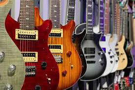
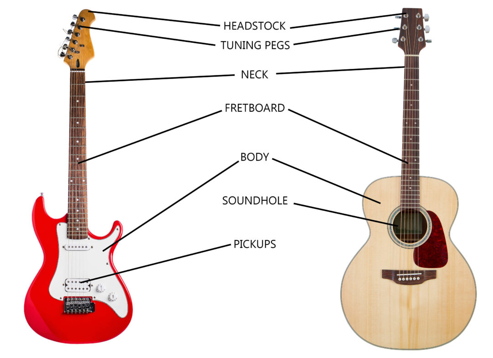

Guitars are often divided into two broad categories: acoustic and electric guitars. Within each category, there are further sub-categories that are nearly endless in quantity and are always evolving. For example, an electric guitar can be purchased in a six-string model (the most common model) or in seven- or twelve-string formats. An instruments overall design, internal construction & components, wood type/species, hardware & eletronic appointments all add to the abundant nature of sub-categories and its unique tonal & functional property.
Electric guitars can have solid, semi-hollow, or hollow bodies; solid bodies produce little sound without amplification. In contrast to a standard acoustic guitar, electric guitars instead rely on electromagnetic pickups, and sometimes piezoelectric pickups, that convert the vibration of the steel strings into signals, which are fed to an amplifier through a patch cable or radio transmitter. The sound is frequently modified by other electronic devices (effects units) or the natural distortion of valves (vacuum tubes) or the pre-amp in the amplifier. There are two main types of magnetic pickups, single- and double-coil (or humbucker), each of which can be passive or active. The electric guitar is used extensively in jazz, blues, R & B, and rock and roll. The first successful magnetic pickup for a guitar was invented by George Beauchamp, and incorporated into the 1931 Ro-Pat-In (later Rickenbacker) "Frying Pan" lap steel; other manufacturers, notably Gibson, soon began to install pickups in archtop models. After World War II the completely solid-body electric was popularized by Gibson in collaboration with Les Paul, and independently by Leo Fender of Fender Music. The lower fretboard action (the height of the strings from the fingerboard), lighter (thinner) strings, and its electrical amplification lend the electric guitar to techniques less frequently used on acoustic guitars. These include tapping, extensive use of legato through pull-offs and hammer-ons (also known as slurs), pinch harmonics, volume swells, and use of a tremolo arm or effects pedals. Some electric guitar models feature piezoelectric pickups, which function as transducers to provide a sound closer to that of an acoustic guitar with the flip of a switch or knob, rather than switching guitars. Those that combine piezoelectric pickups and magnetic pickups are sometimes known as hybrid guitars.[24] Hybrids of acoustic and electric guitars are also common. There are also more exotic varieties, such as guitars with two, three,[25] or rarely four necks, all manner of alternate string arrangements, fretless fingerboards (used almost exclusively on bass guitars, meant to emulate the sound of a stand-up bass), 5.1 surround guitar, and such.
The headstock is located at the end of the guitar neck farthest from the body. It is fitted with machine heads that adjust the tension of the strings, which in turn affects the pitch. The traditional tuner layout is "3+3", in which each side of the headstock has three tuners (such as on Gibson Les Pauls). In this layout, the headstocks are commonly symmetrical. Many guitars feature other layouts, including six-in-line tuners (featured on Fender Stratocasters) or even "4+2" (e.g. Ernie Ball Music Man). Some guitars (such as Steinbergers) do not have headstocks at all, in which case the tuning machines are located elsewhere, either on the body or the bridge. The nut is a small strip of bone, plastic, brass, corian, graphite, stainless steel, or other medium-hard material, at the joint where the headstock meets the fretboard. Its grooves guide the strings onto the fretboard, giving consistent lateral string placement. It is one of the endpoints of the strings' vibrating length. It must be accurately cut, or it can contribute to tuning problems due to string slippage or string buzz. To reduce string friction in the nut, which can adversely affect tuning stability, some guitarists fit a roller nut. Some instruments use a zero fret just in front of the nut. In this case the nut is used only for lateral alignment of the strings, the string height and length being dictated by the zero fret.
A guitar's frets, fretboard, tuners, headstock, and truss rod, all attached to a long wooden extension, collectively constitute its neck. The wood used to make the fretboard usually differs from the wood in the rest of the neck. The bending stress on the neck is considerable, particularly when heavier gauge strings are used (see Tuning), and the ability of the neck to resist bending (see Truss rod) is important to the guitar's ability to hold a constant pitch during tuning or when strings are fretted. The rigidity of the neck with respect to the body of the guitar is one determinant of a good instrument versus a poor-quality one.
Almost all guitars have frets, which are metal strips (usually nickel alloy or stainless steel) embedded along the fretboard and located at exact points that divide the scale length in accordance with a specific mathematical formula. The exceptions include fretless bass guitars and very rare fretless guitars. Pressing a string against a fret determines the strings' vibrating length and therefore its resultant pitch. The pitch of each consecutive fret is defined at a half-step interval on the chromatic scale. Standard classical guitars have 19 frets and electric guitars between 21 and 24 frets, although guitars have been made with as many as 27 frets. Frets are laid out to accomplish an equal tempered division of the octave. Each set of twelve frets represents an octave. The twelfth fret divides the scale length exactly into two halves, and the 24th fret position divides one of those halves in half again.
In acoustic guitars, string vibration is transmitted through the bridge and saddle to the body via sound board. The sound board is typically made of tonewoods such as spruce or cedar. Timbers for tonewoods are chosen for both strength and ability to transfer mechanical energy from the strings to the air within the guitar body. Sound is further shaped by the characteristics of the guitar body's resonant cavity. In expensive instruments, the entire body is made of wood. In inexpensive instruments, the back may be made of plastic. Most electric guitar bodies are made of wood and include a plastic pickguard. Boards wide enough to use as a solid body are very expensive due to the worldwide depletion of hardwood stock since the 1970s, so the wood is rarely one solid piece. Most bodies are made from two pieces of wood with some of them including a seam running down the center line of the body. The most common woods used for electric guitar body construction include maple, basswood, ash, poplar, alder, and mahogany. Many bodies consist of good-sounding, but inexpensive woods, like ash, with a "top", or thin layer of another, more attractive wood (such as maple with a natural "flame" pattern) glued to the top of the basic wood. Guitars constructed like this are often called "flame tops". The body is usually carved or routed to accept the other elements, such as the bridge, pickup, neck, and other electronic components. Most electrics have a polyurethane or nitrocellulose lacquer finish. Other alternative materials to wood are used in guitar body construction. Some of these include carbon composites, plastic material, such as polycarbonate, and aluminum alloys.
The main purpose of the bridge on an acoustic guitar is to transfer the vibration from the strings to the soundboard, which vibrates the air inside of the guitar, thereby amplifying the sound produced by the strings. On all electric, acoustic and original guitars, the bridge holds the strings in place on the body. There are many varied bridge designs. There may be some mechanism for raising or lowering the bridge saddles to adjust the distance between the strings and the fretboard (action), or fine-tuning the intonation of the instrument. Some are spring-loaded and feature a "whammy bar", a removable arm that lets the player modulate the pitch by changing the tension on the strings. The whammy bar is sometimes also called a "tremolo bar". (The effect of rapidly changing pitch is properly called "vibrato". See Tremolo for further discussion of this term.) Some bridges also allow for alternate tunings at the touch of a button.
The saddle of a guitar is the part of the bridge that physically supports the strings. It may be one piece (typically on acoustic guitars) or separate pieces, one for each string (electric guitars and basses). The saddle's basic purpose is to provide the endpoint for the string's vibration at the correct location for proper intonation, and on acoustic guitars to transfer the vibrations through the bridge into the top wood of the guitar. Saddles are typically made of plastic or bone for acoustic guitars, though synthetics and some exotic animal tooth variations (e.g. fossilized tooth, ivory, etc. ) have become popular with some players. Electric guitar saddles are typically metal, though some synthetic saddles are available.
The pickguard, also known as the scratch plate, is usually a piece of laminated plastic or other material that protects the finish of the top of the guitar from damage due to the use of a plectrum ("pick") or fingernails. Electric guitars sometimes mount pickups and electronics on the pickguard. It is a common feature on steel-string acoustic guitars. Some performance styles that use the guitar as a percussion instrument (tapping the top or sides between notes, etc.), such as flamenco, require that a scratchplate or pickguard be fitted to nylon-string instruments.
The standard guitar has six strings, but four-, seven-, eight-, nine-, ten-, eleven-, twelve-, thirteen- and eighteen-string guitars are also available. Classical and flamenco guitars historically used gut strings, but these have been superseded by polymer materials, such as nylon and fluorocarbon. Modern guitar strings are constructed from metal, polymers, or animal or plant product materials. "Steel" strings may be made from alloys incorporating steel, nickel or phosphor bronze. Bass strings for both instruments are wound rather than monofilament.

Wikimedia Foundation. (2024, January 24). Guitar. Wikipedia. https://en.wikipedia.org/wiki/Guitar
Waring, C. (2024, January 23). Best jazz guitarists of all time: A top 50 countdown. uDiscover Music. https://www.udiscovermusic.com/stories/best-jazz-guitarists/
Horsley, J. (2020, July 6). The 100 greatest guitarists of all time. guitarworld. https://www.guitarworld.com/features/the-100-greatest-guitarists-of-all-time/4
The 12 best folk artists of all time. guitarguitar. (n.d.-b). "https://www.guitarguitar.co.uk/news/141779/"
The 10 most legendary country guitarists of all time. guitarguitar. (n.d.-a). "https://www.guitarguitar.co.uk/news/141217/"
The 10 greatest rock and roll guitarists of all time. HowStuffWorks. (2015, July 14). https://entertainment.howstuffworks.com/the-10-greatest-rock-and-roll-guitarists-of-all-time.htm